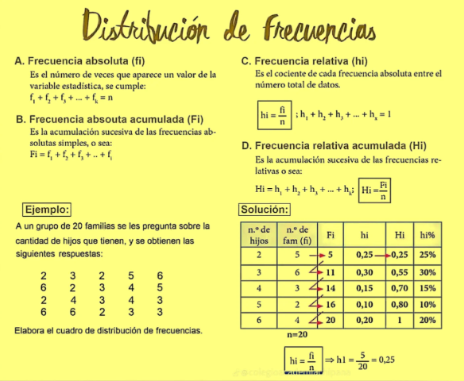
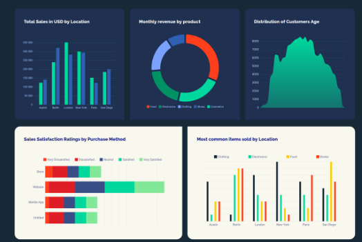

Ver código
options(
knitr.table.format = "html",
scipen = 999
)options(
knitr.table.format = "html",
scipen = 999
)ipak <- function(pkg){
options(repos = c(CRAN="[https://cloud.r-project.org](https://cloud.r-project.org)"))
new.pkg <- pkg[!(pkg %in% rownames(installed.packages()))]
if(length(new.pkg)) install.packages(new.pkg, dependencies = TRUE)
invisible(lapply(pkg, function(p)
suppressPackageStartupMessages(library(p, character.only = TRUE))
))
}
packages <- c("tidyverse","kableExtra","psych","readxl")
ipak(packages)
Distribución de Frecuencias
Concepto
Una distribución de frecuencias es una forma de organizar, resumir y presentar datos estadísticos mediante tablas que muestran el número de observaciones que pertenecen a cada categoría o intervalo de una variable.
Formalmente, si se tiene un conjunto de datos:
X = \{x_1, x_2, x_3, \dots, x_n\}
la distribución de frecuencias permite identificar cuántas veces aparece cada valor o intervalo dentro del conjunto de datos para resumir grandes volúmenes de información, identificar patrones, facilitar la construcción de gráficos estadísticos y calcular medidas descriptivas.
Elementos y Tipos de Frecuencia
Distribución de Frecuencias para Datos Agrupados
Cuando el conjunto de datos es continuo o amplio, se agrupan en intervalos (L_i, L_s):
Base de datos sector (Datos/sector.xlsx).
sector <- read_excel("Datos/sector.xlsx")
names(sector) <- trimws(names(sector))Mostrar algunas filas del dataset
head(sector)# A tibble: 6 × 10
SECTOR NIVEL SATISFECHO PARTICIPACION EXPERIENCIA HIJOS SALARIO LABORAL EDAD
<chr> <chr> <chr> <chr> <dbl> <dbl> <dbl> <dbl> <dbl>
1 Educac… Baja Satisfecho Siempre 17 5 4541 2.03 56
2 Seguri… Alta Satisfecho Siempre 18 4 2077 1.95 27
3 Transp… Baja Insatisfe… Rara vez 19 2 3376 0.74 31
4 Seguri… Alta Satisfecho Nunca 20 4 4273 1.35 46
5 Admini… Alta Muy Satis… A veces 7 4 4520 2.14 36
6 Seguri… Baja Insatisfe… Rara vez 18 3 4715 0.78 46
# ℹ 1 more variable: PROGRMAS <dbl>Número de variables
sector %>% names() %>% length()[1] 10Nombres de las variables
names(sector) [1] "SECTOR" "NIVEL" "SATISFECHO" "PARTICIPACION"
[5] "EXPERIENCIA" "HIJOS" "SALARIO" "LABORAL"
[9] "EDAD" "PROGRMAS" Estructura de las variables
glimpse(sector)Rows: 200
Columns: 10
$ SECTOR <chr> "Educación", "Seguridad", "Transporte", "Seguridad", "Ad…
$ NIVEL <chr> "Baja", "Alta", "Baja", "Alta", "Alta", "Baja", "Alta", …
$ SATISFECHO <chr> "Satisfecho", "Satisfecho", "Insatisfecho", "Satisfecho"…
$ PARTICIPACION <chr> "Siempre", "Siempre", "Rara vez", "Nunca", "A veces", "R…
$ EXPERIENCIA <dbl> 17, 18, 19, 20, 7, 18, 8, 8, 18, 6, 3, 5, 6, 2, 7, 9, 18…
$ HIJOS <dbl> 5, 4, 2, 4, 4, 3, 4, 2, 5, 1, 4, 1, 2, 5, 3, 5, 1, 4, 4,…
$ SALARIO <dbl> 4541, 2077, 3376, 4273, 4520, 4715, 4660, 2691, 2100, 19…
$ LABORAL <dbl> 2.03, 1.95, 0.74, 1.35, 2.14, 0.78, 2.45, 1.78, 1.87, 1.…
$ EDAD <dbl> 56, 27, 31, 46, 36, 46, 49, 46, 58, 23, 56, 34, 44, 41, …
$ PROGRMAS <dbl> 0.347, 0.125, 0.484, 0.436, 0.142, 0.742, 0.437, 0.108, …Transformar las variables
sector$SECTOR <- as.factor(sector$SECTOR)
sector$NIVEL <- factor(
sector$NIVEL,
levels = c("Baja", "Media", "Alta"),
ordered = TRUE
)
sector$SATISFECHO <- factor(
sector$SATISFECHO,
levels = c("Muy Insatisfecho", "Insatisfecho", "Neutral", "Satisfecho", "Muy Satisfecho"),
ordered = TRUE
)
sector$PARTICIPACION <- factor(
sector$PARTICIPACION,
levels = c("Nunca", "Rara vez", "A veces", "Frecuentemente", "Siempre"),
ordered = TRUE
)Nueva estructura de las variables
glimpse(sector)Rows: 200
Columns: 10
$ SECTOR <fct> Educación, Seguridad, Transporte, Seguridad, Administrat…
$ NIVEL <ord> Baja, Alta, Baja, Alta, Alta, Baja, Alta, Alta, Media, A…
$ SATISFECHO <ord> Satisfecho, Satisfecho, Insatisfecho, Satisfecho, Muy Sa…
$ PARTICIPACION <ord> Siempre, Siempre, Rara vez, Nunca, A veces, Rara vez, A …
$ EXPERIENCIA <dbl> 17, 18, 19, 20, 7, 18, 8, 8, 18, 6, 3, 5, 6, 2, 7, 9, 18…
$ HIJOS <dbl> 5, 4, 2, 4, 4, 3, 4, 2, 5, 1, 4, 1, 2, 5, 3, 5, 1, 4, 4,…
$ SALARIO <dbl> 4541, 2077, 3376, 4273, 4520, 4715, 4660, 2691, 2100, 19…
$ LABORAL <dbl> 2.03, 1.95, 0.74, 1.35, 2.14, 0.78, 2.45, 1.78, 1.87, 1.…
$ EDAD <dbl> 56, 27, 31, 46, 36, 46, 49, 46, 58, 23, 56, 34, 44, 41, …
$ PROGRMAS <dbl> 0.347, 0.125, 0.484, 0.436, 0.142, 0.742, 0.437, 0.108, …
Variable Nominal
La variable nominal tiene solo frecuencia absoluta, relativa y porcentaje.
Análisis de frecuencias de SECTOR
tabla_sec <- tibble(Sector = sector$SECTOR) %>%
group_by(Sector) %>%
summarise(fi = n(), .groups = "drop") %>%
mutate(
hi = round(fi / sum(fi), 4),
Porcentaje = paste0(round(hi * 100, 2), "%"),
Sector = as.character(Sector)
)
tot_sec <- tibble(
Sector = "Total",
fi = sum(tabla_sec$fi),
hi = round(sum(tabla_sec$hi), 4),
Porcentaje = paste0(round(sum(tabla_sec$hi) * 100, 2), "%")
)
bind_rows(tabla_sec, tot_sec) %>%
knitr::kable(
col.names = c("Sector", "$f_i$", "$h_i$", "Porcentaje"),
align = c("l", "c", "c", "c")
)| Sector | $f_i$ | $h_i$ | Porcentaje |
|---|---|---|---|
| Administrativo | 34 | 0.17 | 17% |
| Educación | 44 | 0.22 | 22% |
| Sector Salud | 40 | 0.20 | 20% |
| Seguridad | 46 | 0.23 | 23% |
| Transporte | 36 | 0.18 | 18% |
| Total | 200 | 1.00 | 100% |
Variable OrdinalV
La variable ordinal tiene los cuatro tipos de frecuencias.
Distribución de frecuencias según NIVEL
tabla_niv <- tibble(Nivel = sector$NIVEL) %>%
group_by(Nivel) %>%
summarise(fi = n(), .groups = "drop") %>%
mutate(
hi = round(fi / sum(fi), 4),
Porcentaje = paste0(round(hi * 100, 2), "%"),
Fi = cumsum(fi),
Hi = round(cumsum(hi), 4)
) %>%
mutate(
Nivel = as.character(Nivel),
Fi = as.character(Fi),
Hi = as.character(Hi)
)
tot_niv <- tibble(
Nivel = "Total",
fi = sum(tabla_niv$fi),
hi = round(sum(tabla_niv$hi), 4),
Porcentaje = paste0(round(sum(tabla_niv$hi) * 100, 2), "%"),
Fi = "",
Hi = ""
)
bind_rows(tabla_niv, tot_niv) %>%
knitr::kable(
col.names = c("Nivel", "$f_i$", "$h_i$", "Porcentaje", "$F_i$", "$H_i$"),
align = c("l", "c", "c", "c", "c", "c")
)| Nivel | $f_i$ | $h_i$ | Porcentaje | $F_i$ | $H_i$ |
|---|---|---|---|---|---|
| Baja | 71 | 0.355 | 35.5% | 71 | 0.355 |
| Media | 63 | 0.315 | 31.5% | 134 | 0.67 |
| Alta | 66 | 0.330 | 33% | 200 | 1 |
| Total | 200 | 1.000 | 100% |
Distribución de frecuencias según SATISFECHO
tabla_sat <- tibble(Satisfaccion = sector$SATISFECHO) %>%
group_by(Satisfaccion) %>%
summarise(fi = n(), .groups = "drop") %>%
mutate(
hi = round(fi / sum(fi), 4),
Porcentaje = paste0(round(hi * 100, 2), "%"),
Fi = cumsum(fi),
Hi = round(cumsum(hi), 4)
) %>%
mutate(
Satisfaccion = as.character(Satisfaccion),
Fi = as.character(Fi),
Hi = as.character(Hi)
)
tot_sat <- tibble(
Satisfaccion = "Total",
fi = sum(tabla_sat$fi),
hi = round(sum(tabla_sat$hi), 4),
Porcentaje = paste0(round(sum(tabla_sat$hi) * 100, 2), "%"),
Fi = "",
Hi = ""
)
bind_rows(tabla_sat, tot_sat) %>%
knitr::kable(
col.names = c("Satisfacción", "$f_i$", "$h_i$", "Porcentaje", "$F_i$", "$H_i$"),
align = c("l", "c", "c", "c", "c", "c")
)| Satisfacción | $f_i$ | $h_i$ | Porcentaje | $F_i$ | $H_i$ |
|---|---|---|---|---|---|
| Muy Insatisfecho | 43 | 0.215 | 21.5% | 43 | 0.215 |
| Insatisfecho | 40 | 0.200 | 20% | 83 | 0.415 |
| Neutral | 37 | 0.185 | 18.5% | 120 | 0.6 |
| Satisfecho | 38 | 0.190 | 19% | 158 | 0.79 |
| Muy Satisfecho | 42 | 0.210 | 21% | 200 | 1 |
| Total | 200 | 1.000 | 100% |
Distribución de frecuencias según PARTICIPACION
tabla_par <- tibble(Participacion = sector$PARTICIPACION) %>%
group_by(Participacion) %>%
summarise(fi = n(), .groups = "drop") %>%
mutate(
hi = round(fi / sum(fi), 4),
Porcentaje = paste0(round(hi * 100, 2), "%"),
Fi = cumsum(fi),
Hi = round(cumsum(hi), 4)
) %>%
mutate(
Participacion = as.character(Participacion),
Fi = as.character(Fi),
Hi = as.character(Hi)
)
tot_par <- tibble(
Participacion = "Total",
fi = sum(tabla_par$fi),
hi = round(sum(tabla_par$hi), 4),
Porcentaje = paste0(round(sum(tabla_par$hi) * 100, 2), "%"),
Fi = "",
Hi = ""
)
bind_rows(tabla_par, tot_par) %>%
knitr::kable(
col.names = c("Participación", "$f_i$", "$h_i$", "Porcentaje", "$F_i$", "$H_i$"),
align = c("l", "c", "c", "c", "c", "c")
)| Participación | $f_i$ | $h_i$ | Porcentaje | $F_i$ | $H_i$ |
|---|---|---|---|---|---|
| Nunca | 32 | 0.160 | 16% | 32 | 0.16 |
| Rara vez | 37 | 0.185 | 18.5% | 69 | 0.345 |
| A veces | 46 | 0.230 | 23% | 115 | 0.575 |
| Frecuentemente | 37 | 0.185 | 18.5% | 152 | 0.76 |
| Siempre | 48 | 0.240 | 24% | 200 | 1 |
| Total | 200 | 1.000 | 100% |
Variable Discreta
La variable discreta tiene los cuatro tipos de frecuencias.
Distribución de frecuencias según HIJOS
tabla_hij <- tibble(Hijos = sector$HIJOS) %>%
group_by(Hijos) %>%
summarise(fi = n(), .groups = "drop") %>%
arrange(Hijos) %>%
mutate(
hi = round(fi / sum(fi), 4),
Porcentaje = paste0(round(hi * 100, 2), "%"),
Fi = cumsum(fi),
Hi = round(cumsum(hi), 4)
) %>%
mutate(
Hijos = as.character(Hijos),
Fi = as.character(Fi),
Hi = as.character(Hi)
)
tot_hij <- tibble(
Hijos = "Total",
fi = sum(tabla_hij$fi),
hi = round(sum(tabla_hij$hi), 4),
Porcentaje = paste0(round(sum(tabla_hij$hi) * 100, 2), "%"),
Fi = "",
Hi = ""
)
bind_rows(tabla_hij, tot_hij) %>%
knitr::kable(
col.names = c("N° Hijos", "$f_i$", "$h_i$", "Porcentaje", "$F_i$", "$H_i$"),
align = c("l", "r", "r", "r", "r", "r")
)| N° Hijos | $f_i$ | $h_i$ | Porcentaje | $F_i$ | $H_i$ |
|---|---|---|---|---|---|
| 1 | 39 | 0.195 | 19.5% | 39 | 0.195 |
| 2 | 38 | 0.190 | 19% | 77 | 0.385 |
| 3 | 38 | 0.190 | 19% | 115 | 0.575 |
| 4 | 48 | 0.240 | 24% | 163 | 0.815 |
| 5 | 37 | 0.185 | 18.5% | 200 | 1 |
| Total | 200 | 1.000 | 100% |
Distribución de frecuencias según EXPERIENCIA
tabla_exp <- tibble(Experiencia = sector$EXPERIENCIA) %>%
group_by(Experiencia) %>%
summarise(fi = n(), .groups = "drop") %>%
arrange(Experiencia) %>%
mutate(
hi = round(fi / sum(fi), 4),
Porcentaje = paste0(round(hi * 100, 2), "%"),
Fi = cumsum(fi),
Hi = round(cumsum(hi), 4)
) %>%
mutate(
Experiencia = as.character(Experiencia),
Fi = as.character(Fi),
Hi = as.character(Hi)
)
tot_exp <- tibble(
Experiencia = "Total",
fi = sum(tabla_exp$fi),
hi = round(sum(tabla_exp$hi), 4),
Porcentaje = paste0(round(sum(tabla_exp$hi) * 100, 2), "%"),
Fi = "",
Hi = ""
)
bind_rows(tabla_exp, tot_exp) %>%
knitr::kable(
col.names = c("Experiencia", "$f_i$", "$h_i$", "Porcentaje", "$F_i$", "$H_i$"),
align = c("l", "r", "r", "r", "r", "r")
)| Experiencia | $f_i$ | $h_i$ | Porcentaje | $F_i$ | $H_i$ |
|---|---|---|---|---|---|
| 0 | 9 | 0.045 | 4.5% | 9 | 0.045 |
| 1 | 21 | 0.105 | 10.5% | 30 | 0.15 |
| 2 | 5 | 0.025 | 2.5% | 35 | 0.175 |
| 3 | 7 | 0.035 | 3.5% | 42 | 0.21 |
| 4 | 3 | 0.015 | 1.5% | 45 | 0.225 |
| 5 | 10 | 0.050 | 5% | 55 | 0.275 |
| 6 | 11 | 0.055 | 5.5% | 66 | 0.33 |
| 7 | 6 | 0.030 | 3% | 72 | 0.36 |
| 8 | 17 | 0.085 | 8.5% | 89 | 0.445 |
| 9 | 9 | 0.045 | 4.5% | 98 | 0.49 |
| 10 | 9 | 0.045 | 4.5% | 107 | 0.535 |
| 11 | 11 | 0.055 | 5.5% | 118 | 0.59 |
| 12 | 11 | 0.055 | 5.5% | 129 | 0.645 |
| 13 | 7 | 0.035 | 3.5% | 136 | 0.68 |
| 14 | 10 | 0.050 | 5% | 146 | 0.73 |
| 15 | 7 | 0.035 | 3.5% | 153 | 0.765 |
| 16 | 10 | 0.050 | 5% | 163 | 0.815 |
| 17 | 7 | 0.035 | 3.5% | 170 | 0.85 |
| 18 | 10 | 0.050 | 5% | 180 | 0.9 |
| 19 | 10 | 0.050 | 5% | 190 | 0.95 |
| 20 | 10 | 0.050 | 5% | 200 | 1 |
| Total | 200 | 1.000 | 100% |
Variable Continua
La variable continua se tabula con intervalos.
Distribución de frecuencias para EDAD
x <- sector$EDAD
k <- ceiling(1 + 3.322 * log10(length(x)))
A <- ceiling((max(x) - min(x)) / k)
Xmin <- min(x)
Xmax <- Xmin + k * A
m1 <- (Xmin + (Xmin + A)) / 2
interv <- cut(x = x, breaks = seq(Xmin, Xmax, by = A), include.lowest = TRUE)
tabla_edad <- tibble(Edad = interv) %>%
group_by(Edad, .drop = FALSE) %>%
summarise(fi = n(), .groups = "drop") %>%
mutate(
hi = round(fi / sum(fi), 4),
mi = seq(m1, by = A, length.out = n()) %>% as.character(),
Fi = cumsum(fi) %>% as.character(),
Hi = round(cumsum(fi / sum(fi)), 4) %>% as.character(),
Edad = as.character(Edad)
) %>%
relocate(Edad, mi, fi) %>%
add_row(Edad = "Total", mi = "", fi = sum(.$fi), hi = sum(.$hi), Fi = "", Hi = "")
tabla_edad %>%
knitr::kable(
col.names = c("Edad", "$m_i$", "$f_i$", "$h_i$", "$F_i$", "$H_i$"),
align = c("l", "r", "r", "r", "r", "r")
) %>%
kableExtra::kable_styling(full_width = FALSE) %>%
kableExtra::add_header_above(c("Distribución de frecuencias para la variable Edad" = 6))| Edad | $m_i$ | $f_i$ | $h_i$ | $F_i$ | $H_i$ |
|---|---|---|---|---|---|
| [20,25] | 22.5 | 31 | 0.155 | 31 | 0.155 |
| (25,30] | 27.5 | 24 | 0.120 | 55 | 0.275 |
| (30,35] | 32.5 | 24 | 0.120 | 79 | 0.395 |
| (35,40] | 37.5 | 23 | 0.115 | 102 | 0.51 |
| (40,45] | 42.5 | 25 | 0.125 | 127 | 0.635 |
| (45,50] | 47.5 | 20 | 0.100 | 147 | 0.735 |
| (50,55] | 52.5 | 30 | 0.150 | 177 | 0.885 |
| (55,60] | 57.5 | 23 | 0.115 | 200 | 1 |
| (60,65] | 62.5 | 0 | 0.000 | 200 | 1 |
| Total | 200 | 1.000 |
Distribución de frecuencias para SALARIO
x <- sector$SALARIO
k <- ceiling(1 + 3.322 * log10(length(x)))
A <- ceiling((max(x) - min(x)) / k)
Xmin <- min(x)
Xmax <- Xmin + k * A
m1 <- (Xmin + (Xmin + A)) / 2
interv <- cut(x = x, breaks = seq(Xmin, Xmax, by = A), include.lowest = TRUE)
tabla_sal <- tibble(Salario = interv) %>%
group_by(Salario, .drop = FALSE) %>%
summarise(fi = n(), .groups = "drop") %>%
mutate(
hi = round(fi / sum(fi), 4),
mi = seq(m1, by = A, length.out = n()) %>% as.character(),
Fi = cumsum(fi) %>% as.character(),
Hi = round(cumsum(fi / sum(fi)), 4) %>% as.character(),
Salario = as.character(Salario)
) %>%
relocate(Salario, mi, fi) %>%
add_row(Salario = "Total", mi = "", fi = sum(.$fi), hi = sum(.$hi), Fi = "", Hi = "")
tabla_sal %>%
knitr::kable(
col.names = c("Salario", "$m_i$", "$f_i$", "$h_i$", "$F_i$", "$H_i$"),
align = c("l", "r", "r", "r", "r", "r")
) %>%
kableExtra::kable_styling(full_width = FALSE) %>%
kableExtra::add_header_above(c("Distribución de frecuencias para la variable Salario" = 6))| Salario | $m_i$ | $f_i$ | $h_i$ | $F_i$ | $H_i$ |
|---|---|---|---|---|---|
| [1.08e+03,1.52e+03] | 1300.5 | 22 | 0.110 | 22 | 0.11 |
| (1.52e+03,1.95e+03] | 1731.5 | 13 | 0.065 | 35 | 0.175 |
| (1.95e+03,2.38e+03] | 2162.5 | 19 | 0.095 | 54 | 0.27 |
| (2.38e+03,2.81e+03] | 2593.5 | 20 | 0.100 | 74 | 0.37 |
| (2.81e+03,3.24e+03] | 3024.5 | 17 | 0.085 | 91 | 0.455 |
| (3.24e+03,3.67e+03] | 3455.5 | 25 | 0.125 | 116 | 0.58 |
| (3.67e+03,4.1e+03] | 3886.5 | 23 | 0.115 | 139 | 0.695 |
| (4.1e+03,4.53e+03] | 4317.5 | 28 | 0.140 | 167 | 0.835 |
| (4.53e+03,4.96e+03] | 4748.5 | 33 | 0.165 | 200 | 1 |
| Total | 200 | 1.000 |
Distribución de frecuencias para LABORAL
x <- sector$LABORAL
k <- ceiling(1 + 3.322 * log10(length(x)))
A <- ceiling(((max(x) - min(x)) / k) * 100) / 100
Xmin <- min(x)
Xmax <- Xmin + k * A
m1 <- (Xmin + (Xmin + A)) / 2
interv <- cut(x = x, breaks = seq(Xmin, Xmax, by = A), include.lowest = TRUE)
tabla_lab <- tibble(Laboral = interv) %>%
group_by(Laboral, .drop = FALSE) %>%
summarise(fi = n(), .groups = "drop") %>%
mutate(
hi = round(fi / sum(fi), 4),
mi = seq(m1, by = A, length.out = n()) %>% as.character(),
Fi = cumsum(fi) %>% as.character(),
Hi = round(cumsum(fi / sum(fi)), 4) %>% as.character(),
Laboral = as.character(Laboral)
) %>%
relocate(Laboral, mi, fi) %>%
add_row(Laboral = "Total", mi = "", fi = sum(.$fi), hi = sum(.$hi), Fi = "", Hi = "")
tabla_lab %>%
knitr::kable(
col.names = c("Laboral", "$m_i$", "$f_i$", "$h_i$", "$F_i$", "$H_i$"),
align = c("l", "r", "r", "r", "r", "r")
) %>%
kableExtra::kable_styling(full_width = FALSE) %>%
kableExtra::add_header_above(c("Distribución de frecuencias para la variable Laboral" = 6))| Laboral | $m_i$ | $f_i$ | $h_i$ | $F_i$ | $H_i$ |
|---|---|---|---|---|---|
| [0.54,0.76] | 0.65 | 16 | 0.080 | 16 | 0.08 |
| (0.76,0.98] | 0.87 | 21 | 0.105 | 37 | 0.185 |
| (0.98,1.2] | 1.09 | 14 | 0.070 | 51 | 0.255 |
| (1.2,1.42] | 1.31 | 24 | 0.120 | 75 | 0.375 |
| (1.42,1.64] | 1.53 | 29 | 0.145 | 104 | 0.52 |
| (1.64,1.86] | 1.75 | 24 | 0.120 | 128 | 0.64 |
| (1.86,2.08] | 1.97 | 22 | 0.110 | 150 | 0.75 |
| (2.08,2.3] | 2.19 | 29 | 0.145 | 179 | 0.895 |
| (2.3,2.52] | 2.41 | 21 | 0.105 | 200 | 1 |
| Total | 200 | 1.000 |
Distribución de frecuencias para PROGRMAS
x <- sector$PROGRMAS
k <- ceiling(1 + 3.322 * log10(length(x)))
A <- ceiling(((max(x) - min(x)) / k) * 1000) / 1000
Xmin <- min(x)
Xmax <- Xmin + k * A
m1 <- (Xmin + (Xmin + A)) / 2
interv <- cut(x = x, breaks = seq(Xmin, Xmax, by = A), include.lowest = TRUE)
tabla_prg <- tibble(Programas = interv) %>%
group_by(Programas, .drop = FALSE) %>%
summarise(fi = n(), .groups = "drop") %>%
mutate(
hi = round(fi / sum(fi), 4),
mi = seq(m1, by = A, length.out = n()) %>% as.character(),
Fi = cumsum(fi) %>% as.character(),
Hi = round(cumsum(fi / sum(fi)), 4) %>% as.character(),
Programas = as.character(Programas)
) %>%
relocate(Programas, mi, fi) %>%
add_row(Programas = "Total", mi = "", fi = sum(.$fi), hi = sum(.$hi), Fi = "", Hi = "")
tabla_prg %>%
knitr::kable(
col.names = c("Programas", "$m_i$", "$f_i$", "$h_i$", "$F_i$", "$H_i$"),
align = c("l", "r", "r", "r", "r", "r")
) %>%
kableExtra::kable_styling(full_width = FALSE) %>%
kableExtra::add_header_above(c("Distribución de frecuencias para la variable Programas" = 6))| Programas | $m_i$ | $f_i$ | $h_i$ | $F_i$ | $H_i$ |
|---|---|---|---|---|---|
| [0.1,0.198] | 0.149 | 22 | 0.110 | 22 | 0.11 |
| (0.198,0.296] | 0.247 | 19 | 0.095 | 41 | 0.205 |
| (0.296,0.394] | 0.345 | 24 | 0.120 | 65 | 0.325 |
| (0.394,0.492] | 0.443 | 34 | 0.170 | 99 | 0.495 |
| (0.492,0.59] | 0.541 | 16 | 0.080 | 115 | 0.575 |
| (0.59,0.688] | 0.639 | 18 | 0.090 | 133 | 0.665 |
| (0.688,0.786] | 0.737 | 22 | 0.110 | 155 | 0.775 |
| (0.786,0.884] | 0.835 | 21 | 0.105 | 176 | 0.88 |
| (0.884,0.982] | 0.933 | 24 | 0.120 | 200 | 1 |
| Total | 200 | 1.000 |
Tablas de contingencia
table_sec_niv <- table(sector$SECTOR, sector$NIVEL)
table_df <- as.data.frame.matrix(table_sec_niv)
table_df$Total <- rowSums(table_df)
total_fi <- sum(table_df$Total)
table_df <- rbind(table_df, Total = c(colSums(table_sec_niv), total_fi))
table_df %>%
kable("html", caption = "Tabla de Frecuencias absolutas de SECTOR vs NIVEL") %>%
kable_styling(
bootstrap_options = c("striped", "hover", "condensed", "responsive"),
full_width = FALSE,
position = "center"
) %>%
row_spec(nrow(table_df), bold = TRUE, color = "white", background = "green")| Baja | Media | Alta | Total | |
|---|---|---|---|---|
| Administrativo | 10 | 14 | 10 | 34 |
| Educación | 10 | 16 | 18 | 44 |
| Sector Salud | 16 | 9 | 15 | 40 |
| Seguridad | 19 | 14 | 13 | 46 |
| Transporte | 16 | 10 | 10 | 36 |
| Total | 71 | 63 | 66 | 200 |